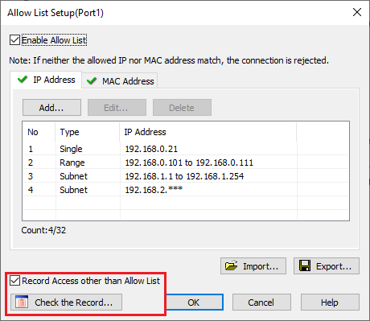
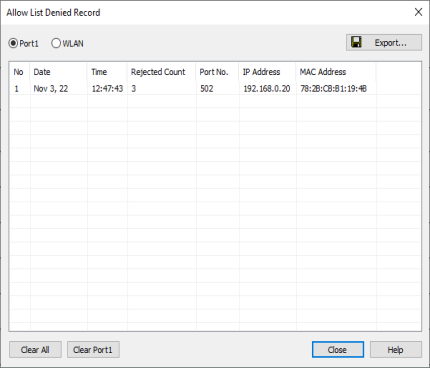
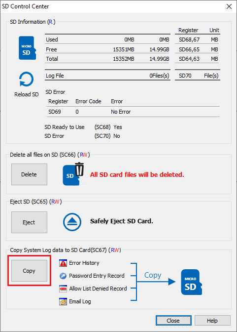
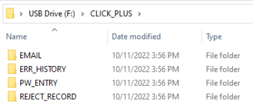
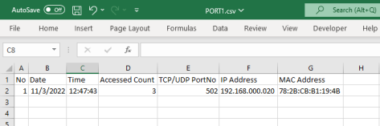

Allow List Denied Record
Topic: CL315

Allow List Denied Record |
Topic: CL315
|
A denied record is defined as a rejected connection because the network device IP Address or MAC Address is not in the Allow List setup. These records can be used as an indicator that an unwanted device is trying connect to the PLC.

When enabled on the Allow List Setup dialog, the Allow List Denied Record will record the last 32 rejected connection attempts. This record will reside in the PLC and can be viewed with two methods:
When connected to the PLC with the programming software, select the Menu>PLC>Check Event Records>Allow List Denied Record. The Allow List Denied Record window will open. The log can be erased using the Clear buttons.

Port1: Select to view the updated Port1 Records. Clicking again will refresh this record list.
WLAN: Select to view the updated WLAN Records. Clicking again will refresh this record list.
Export: The currently viewed Record list can be saved into a CSV file.
Number: Row number of the records. The list will contain the previous 32 devices which have been rejected.
Date/Time: The newest attempted connection Date and Time.
Rejected Count: When the same device is rejected multiple times this value will increment.
Port Number: The TCP or UDP port number of the rejected connection.
IP Address: The IP Address of the rejected connection.
MAC Address: The MAC Address of the rejected connection. If the rejected device is unknown, it may be helpful to lookup the MAC Vendor Prefix.
When you are connected with the programming software select the PLC>SD Control Center. Select the Copy button in the Copy System LOG Data to SD Card section.

This will create a folder named REJECT_RECORD on the SD card where a PORT1.csv and WLAN.csv files will also be created that contains the Allow List Denied Records.

